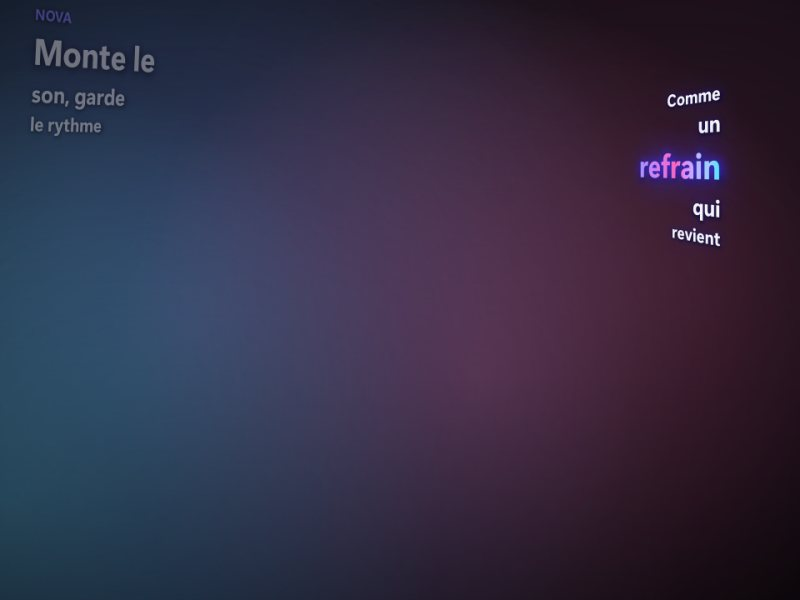
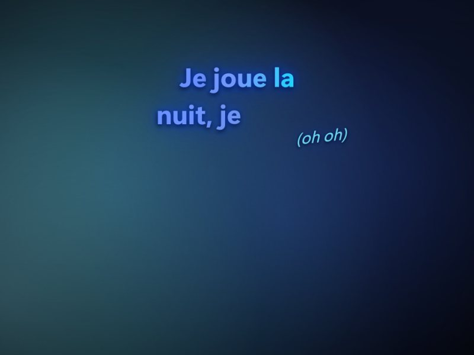
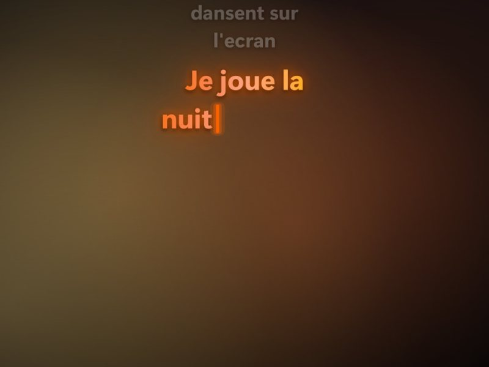
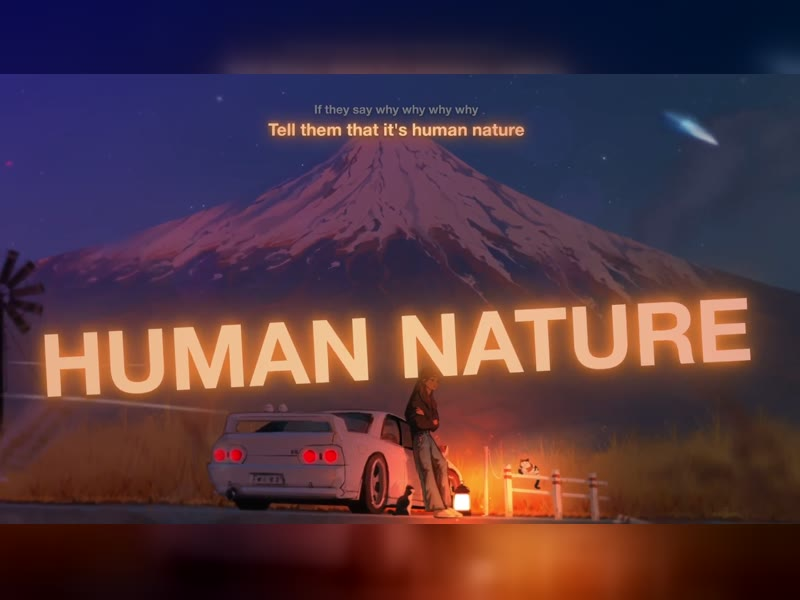
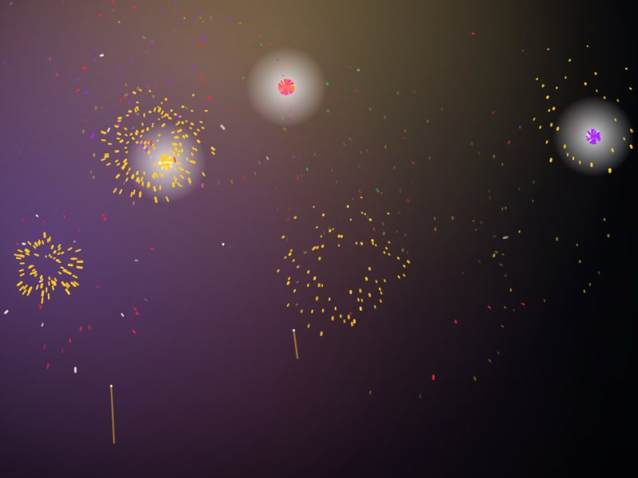
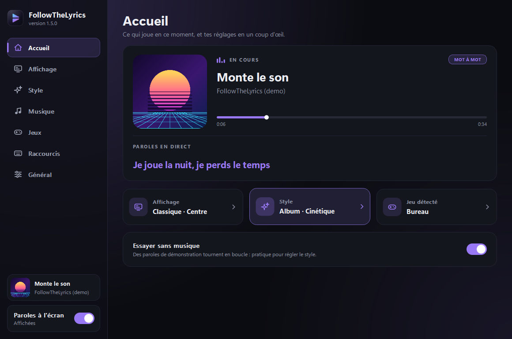

Edit
Chaque ligne surgit ailleurs
FollowTheLyrics affiche les paroles en rythme, mot à mot, aux couleurs de la pochette. Tu lances ta musique, tu joues, c'est tout.
Le vrai rendu de l'appli, filmé sur un décor de démonstration.
C'est normal au premier lancement : clique sur Informations complémentaires, puis sur Exécuter quand même.
Chaque carte est une vraie capture de l'appli. Fais-les défiler.

Chaque ligne surgit ailleurs

Comme sur Spotify

Lettre après lettre

Quand il est chanté

?À toi de les trouver
Pas une ligne de texte dans un coin : les paroles bougent avec la musique.
Chaque mot s'allume au moment où il est chanté, comme sur Spotify ou Apple Music.
Le texte et son halo prennent les trois couleurs les plus marquantes de l'album.
Le texte grossit sur la grosse caisse, le refrain s'affiche plus grand, les mots tenus tremblent.
Les paroles évitent la minimap, la barre de sorts et le chat. Tu peux dessiner tes propres zones.
Une traduction française discrète sous chaque ligne, pour les chansons étrangères.
N'importe quel lecteur que Windows ou Linux reconnaît. Les paroles sont trouvées toutes seules.
Rien n'est injecté dans le jeu, donc aucun souci d'anti-cheat. Aucun compte de musique n'est demandé.

Un seul fichier : FollowTheLyrics.exe pour Windows, FollowTheLyrics-linux pour Linux. Sous Windows, il propose de s'installer avec une icône dans le menu Démarrer.
Les paroles sont trouvées toutes seules et gardées en mémoire pour la prochaine écoute.
C'est le mode qui laisse les paroles passer devant le jeu. Ctrl Alt L les masque à tout moment.
C'est normal pour un petit logiciel qui n'a pas de signature payante. Clique sur « Informations complémentaires », puis « Exécuter quand même ». Le code est entièrement visible sur GitHub.
Télécharge FollowTheLyrics-linux, rends-le exécutable avec chmod +x FollowTheLyrics-linux, puis lance-le. La musique est lue par MPRIS (Spotify, Firefox, Chrome, VLC…). Sous Wayland, l'appli passe par XWayland pour rester au-dessus du jeu.
FollowTheLyrics est une simple fenêtre transparente posée au-dessus du jeu, comme une fenêtre Discord. Il ne lit pas la mémoire du jeu et n'y injecte rien. Il demande seulement à Windows quel programme est au premier plan.
Le jeu est sûrement en plein écran exclusif : Windows n'autorise alors aucune fenêtre par-dessus. Passe-le en « fenêtré sans bordure » dans ses options vidéo. Le logiciel te prévient quand il détecte ce cas.
Tout dépend de ce qui existe pour le morceau. Quand le découpage mot à mot n'est pas disponible, les paroles s'affichent ligne par ligne. Quelques titres rares n'ont pas de paroles du tout.
De NetEase Cloud Music et de LRCLIB, et la traduction de Google Traduction. Ces services ne sont pas officiels et peuvent changer.
L'écran n'est redessiné que lorsque quelque chose bouge, et seulement autour du texte.
Si Windows affiche un écran bleu, clique sur Informations complémentaires, puis sur Exécuter quand même.
Rends le fichier exécutable avec chmod +x FollowTheLyrics-linux, puis lance-le.